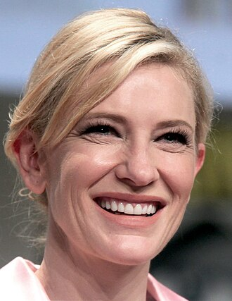

Cate Blanchett
Chameleon actress of the thousand faces
Biography

Cate Blanchett was born on May 14, 1969 in Melbourne, Australia. She is an actress and producer, known for The Lord of the Rings: The Return of the King (2003), Blue Jasmine (2013) and Carol (2015). She has been married to Andrew Upton since December 29, 1997. They have four children.
Blanchett is one of the most acclaimed actors of her generation, having received numerous accolades, including two Academy Awards, three BAFTA Awards, three Golden Globe Awards, and three Screen Actors Guild Awards.
Filmography

- 2015
- Truth
- Director: James Vanderbilt
- Character: Mary Mapes
- 2015
- Carol
- Director: Todd Haynes
- Character: Carol Aird
- 2013
- Blue Jasmine
- Director: Woody Allen
- Character: Jeanette "Jasmine" Francis
- 2007
- Elizabeth: The Golden Age
- Director: Shekhar Kapur
- Character: Queen Elizabeth I
- 2001
- The Lord of the Rings: The Fellowship of the Ring
- Director: Peter Jackson
- Character: Galadriel
Awards

- (2013) Blue Jasmine - Best Actress
- (2004) The Aviator - Best Supporting Actress
- (2015) Carol - Best Actress Nomination
- (2007) Elizabeth: The Golden Age - Best Actress Nomination
- (1998) Elizabeth - Best Actress Nomination
- (2006) Notes on a Scandal - Best Supporting Actress Nomination
More info
Follow Cate Blanchett on social media for updates and news